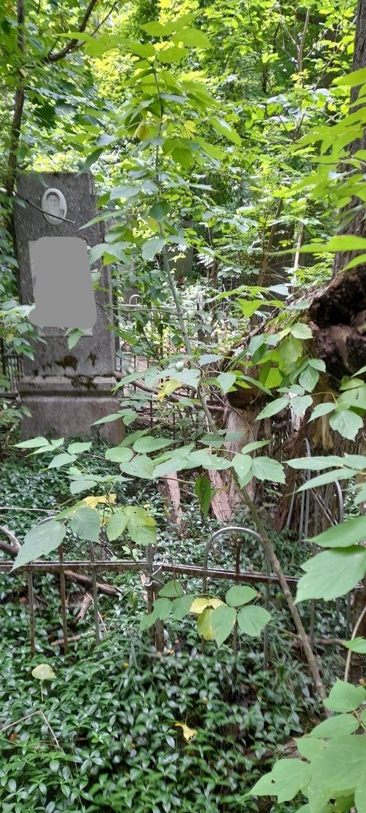
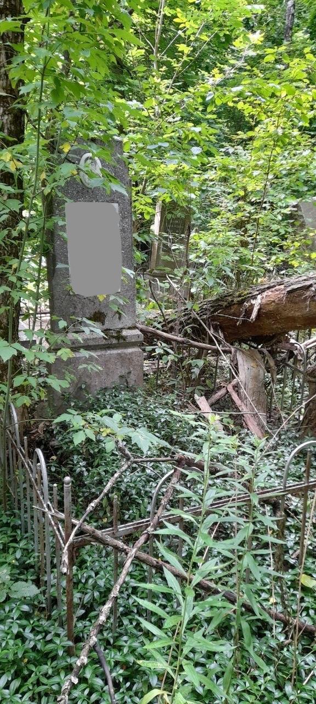
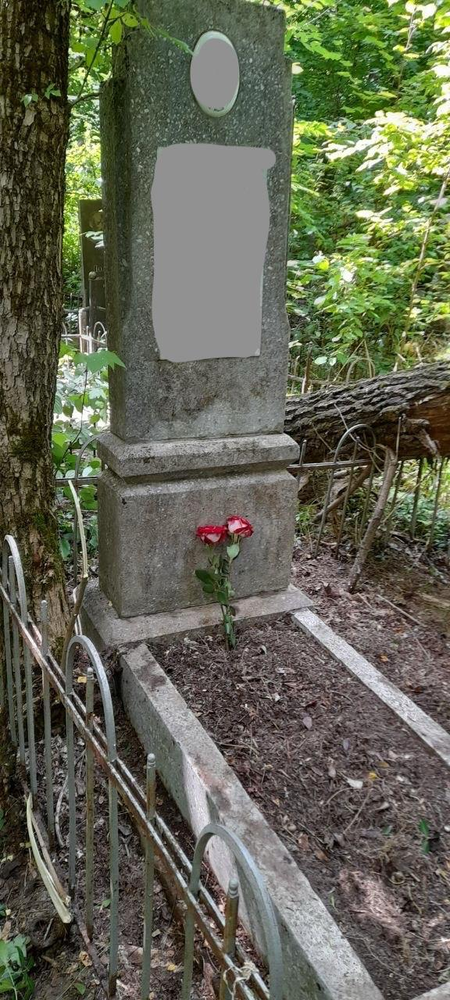

Как найти могилу по свидетельству о смерти: реальный случай, шаг за шагом
Реальный пример того, как мы нашли могилу в Украине, имея только свидетельство о смерти — архивный поиск, сроки и почему мы не просим предоплату.
#поиск могилы архивный поиск
Не знать точное место захоронения близкого человека — гораздо более распространённая ситуация, чем кажется большинству людей. Семейные документы теряются с годами, кладбища меняются, родственники, которые знали все подробности, уходят из жизни, и иногда единственным документом, который остаётся, является свидетельство о смерти — без каких-либо указаний на то, где именно состоялось захоронение.
Это история одного такого случая: клиент обратился к нам, имея только свидетельство о смерти, а мы, опираясь лишь на этот документ, смогли установить точное место захоронения.

Можно ли действительно найти могилу только по свидетельству о смерти?
Во многих случаях — да. Но не всегда быстро и не всегда с первой попытки. Этот случай занял чуть меньше двух месяцев — от первого сообщения до финального отчёта об уборке. Вот как на самом деле выглядел этот процесс.
Шаг 1 — Что нам прислал клиент
Сообщение было на русском языке, коротким и простым:
"У меня есть только свидетельство о смерти. Сообщите, пожалуйста, сможете ли вы по нему найти могилу."
Больше ничего: ни названия кладбища, ни номера сектора или участка, ни свежих фотографий, ни родственников, которые могли бы подсказать место захоронения. На самом деле это гораздо более типичная отправная точка, чем многие думают. Это вовсе не означает, что поиск обречён на неудачу. Мы честно сказали клиенту: попробовать можно.
Шаг 2 — Почему мы ещё не просили предоплату
На этом этапе мы действительно не знали, удастся ли вообще найти могилу. Именно поэтому мы не просили никакой предоплаты. Нам казалось неправильным просить клиента платить до того, как у нас появится хоть какой-то конкретный результат. На тот момент поиск оставался открытым вопросом, а не подтверждённой услугой.
Шаг 3 — Какую информацию можно получить из свидетельства о смерти
Свидетельство о смерти обычно содержит гораздо больше полезной информации, чем кажется на первый взгляд. Полное имя, дата смерти и место регистрации смерти чаще всего становятся главными отправными точками, поскольку именно вокруг этих данных обычно организованы записи о захоронении и архивные документы.
Шаг 4 — Архивный поиск
Далее началась основная работа: сопоставление записей, изучение соответствующих архивов и реестров, отправка письменных запросов и анализ полученных ответов. Мы намеренно не называем конкретные учреждения, с которыми работаем, поскольку в каждом случае они могут быть разными.
Эта часть процесса никогда не бывает мгновенной. Одни ответы приходят через несколько дней, другие приходится ждать неделями. Старые записи часто не оцифрованы, поэтому их приходится проверять вручную. В этом случае понадобилось больше месяца переписки и уточнений, прежде чем мы получили конкретное кладбище и сектор, с которыми уже можно было работать.
Шаг 5 — Подтверждение места захоронения
Когда мы получили точную информацию, мы сразу сообщили об этом клиенту. Только после этого — когда уже было что проверять на месте — мы попросили небольшую предоплату перед выездом на кладбище. Именно тогда появился смысл переходить к следующему этапу работы.

Шаг 6 — Проверка могилы на месте
Архивные записи не всегда полностью совпадают с реальностью. Поэтому первое, что мы сделали после приезда на кладбище, — убедились, что это именно та могила. Мы сверили имя, даты и место захоронения, и только после этого приступили к выполнению работ.
Шаг 7 — Уборка и дерево, о котором мы не знали
Когда место было подтверждено, мы обнаружили, что рядом с могилой упало дерево. Ни мы, ни клиент не знали об этом заранее. Мы выполнили согласованную уборку, а удаление дерева предложили как отдельную услугу с отдельной сметой, не включая эти работы в стоимость без предварительного согласования.

Шаг 8 — Окончательная оплата после завершения работы
Только после того, как уборка была завершена, а клиент получил фотографии «до» и «после», отчёт и координаты могилы, мы попросили оплатить оставшуюся стоимость работ.
Что этот случай говорит о нашем подходе
Такие поиски требуют времени и сотрудничества. В этом случае весь процесс — от первого сообщения до финального отчёта — занял чуть меньше двух месяцев. Некоторые поиски могут занимать ещё больше времени.
Но мы не перекладываем финансовый риск на клиента, пока результат остаётся неизвестным. Оплата производится после каждого подтверждённого этапа работы, а не наоборот: никакой предоплаты, пока нет конкретного результата, и никакого окончательного платежа, пока работа не выполнена.
В конце клиент наконец смог увидеть могилу — получил фотографии, координаты и увидел ухоженное место захоронения. Он сказал, что почувствовал большое облегчение и рад, что теперь сможет и дальше заботиться об этом месте. Именно на такие долгосрочные отношения мы и рассчитываем, а не просто на выполнение одного заказа.
Часто задаваемые вопросы
У меня есть только свидетельство о смерти — без названия кладбища и места захоронения. Можете ли вы помочь?
Во многих случаях — да. Часто одного свидетельства о смерти достаточно, чтобы начать поиск. Отправьте нам всё, что у вас есть, и мы честно скажем, насколько реалистично найти могилу ещё до каких-либо договорённостей.
Сколько времени обычно занимает такой поиск?
Всё зависит от конкретного случая. Только архивный поиск в этой истории занял больше месяца, а весь процесс — чуть меньше двух месяцев. Продолжительность зависит от полноты архивных записей и скорости ответов архивов и реестров.
Что будет, если архивы не помогут найти точное место?
В этом конкретном случае архивный поиск дал нам точное кладбище и сектор. Но этот вопрос возникает достаточно часто, поэтому стоит объяснить, как мы работаем в других ситуациях.
Если архивных данных недостаточно, следующим этапом обычно становится поиск непосредственно на кладбище — проверка памятников, записей и других ориентиров на месте.
В таких случаях схема работы отличается от обычного заказа на уборку. Мы просим клиента компенсировать только наши фактические расходы — дорогу и другие затраты, непосредственно связанные с поиском, а не оплачивать дополнительное вознаграждение за сам процесс. Мы подтверждаем эти расходы фотографиями из города и с кладбища, квитанциями и другими доказательствами, чтобы клиент видел: это реальная работа на месте, а не просто переписка по электронной почте. Мы не зарабатываем на этих расходах.
При этом мы заранее согласовываем фиксированную стоимость именно за результат — найденную и подтверждённую могилу. Таким образом риск клиента ограничивается лишь стоимостью поездки, а мы максимально заинтересованы в успешном завершении поиска, поскольку получаем оплату только тогда, когда достигаем результата.
Придётся ли мне платить, если могилу найти не удастся?
Каждый такой случай мы рассматриваем индивидуально ещё до того, как просим какую-либо оплату. Если у вас есть только свидетельство о смерти или минимум информации, мы честно скажем, насколько поиск имеет шансы на успех, прежде чем вы понесёте какие-либо расходы.
Если вы пытаетесь найти могилу
Если у вас есть свидетельство о смерти и почти нет другой информации, этого часто бывает достаточно, чтобы начать поиск.
Свяжитесь с нами, отправьте всё, что у вас есть, и мы честно сообщим, что, по нашему мнению, возможно сделать ещё до каких-либо договорённостей или оплаты.